Get started! Deconvolution of mouse lymph node samples
Source:vignettes/realModelExample-hq.Rmd
realModelExample-hq.RmdIn this vignette, we will analyze a spatial transcriptomics dataset
(10x Visium) comprising three slides from murine lymph nodes, two of
which obtained after a 48-hour infection with Mycobacterium
smegmatis (Lopez et al. (2022)). As a
reference, we will use the paired single-cell RNA-seq (10x Chromium)
data from the same study. The raw data is publicly available on GEO (GSE173778),
but for ease of use, we have made it available through the
SpatialDDLSdata R data package.
Loading data
Firstly, let’s load the required packages and data:
library("SpatialDDLS")
library("SingleCellExperiment")
library("SpatialExperiment")
library("ggplot2")
library("ggpubr")
## in case it is not installed
if (!requireNamespace("SpatialDDLSdata", quietly = TRUE)) {
if (!requireNamespace("devtools", quietly = TRUE)) {
install.packages("devtools")
}
devtools::install_github("diegommcc/SpatialDDLSdata")
}
library("SpatialDDLSdata")
# SingleCellExperiment with scRNA-seq
data(MouseDLN.SCE)
# SpatialExperiment with spatial transcriptomics data
data(MouseDLN.ST)Let’s explore the spatial transcriptomics data contained in the
MouseDLN.ST object:
cbind(spatialCoords(MouseDLN.ST), colData(MouseDLN.ST)) %>% as.data.frame() %>%
ggplot(aes(X0, X1, color = lymph_node)) +
geom_point() + ggtitle("Mouse lymph nodes by condition") +
theme_classic() + coord_fixed()
With regard to the single-cell RNA-seq data, preprocessing and visualization could be performed, but such analyses are outside the scope of this tutorial.
Loading data into a SpatialDDLS object
Now, we need to create a SpatialDDLS object, which will
serve as the central core for all subsequent steps. We recommend
including both the spatial and single-cell transcriptomics data to
enable filtering and selection of only those genes that are present in
both data types for further analyses. Additionally, we recommend
filtering genes based on their expression levels in order to reduce the
number of dimensions and consider only meaningful genes. Please, refer
to the documentation to review the implemented strategies (specially
sc.n.genes.per.cluster and sc.min.mean.counts
parameters).
mouseDLN.SDDLS <- createSpatialDDLSobject(
sc.data = MouseDLN.SCE,
sc.cell.ID.column = "CellID",
sc.gene.ID.column = "GeneSymbol",
sc.cell.type.column = "broad_cell_types",
st.data = MouseDLN.ST,
st.spot.ID.column = "CellID",
st.gene.ID.column = "GeneSymbol",
sc.filt.genes.cluster = TRUE,
sc.n.genes.per.cluster = 150,
sc.min.mean.counts = 2
)## === 1 SpatialExperiment objects provided## === Processing spatial transcriptomics data## 'as(<dgCMatrix>, "dgTMatrix")' is deprecated.
## Use 'as(., "TsparseMatrix")' instead.
## See help("Deprecated") and help("Matrix-deprecated").## - Filtering features:## - Selected features: 12514## - Discarded features: 1434## ## === Processing single-cell data## - Removing 16 genes without expression in any cell## - Filtering features:## - Selected features: 12350## - Discarded features: 488##
## === Number of shared genes between single-cell and spatial transcriptomics datasets: 10941## - Original # genes in single-cell data: 12350## - Original # genes in ST data (object with the greatest # genes): 12514##
## === Number of removed mitochondrial genes: 11##
## === Number of genes after filtering based on logFC: 1041##
## === Final number of dimensions for further analyses: 1041We can show some basic information about the object:
mouseDLN.SDDLS## An object of class SpatialDDLS
## Real single-cell profiles:
## 1041 features and 14989 cells
## rownames: Rps15 Zfp949 Dscam ... Dscam Pax5 Emp3 Arpc2
## colnames: AGGCCACCAACTTGCA-1-2 CTCCACAAGAAGGGAT-1-1 GTCAAACAGGTTGTTC-1-0 ... GTCAAACAGGTTGTTC-1-0 TAACACGCAAGTGTCT-1-2 TCGCACTGTACTGACT-1-2 CCGGTAGGTGTGATGG-1-0
## Spatial experiments:
## 1 experiments
## 1041 features and 1092 spots
## rownames: Lifr Tppp3 Cacnb3 ... Cacnb3 Thbd Sned1 Pim1
## colnames: CAATAAACCTTGGCCC-1-1 GCCGCTTGTGAGAAAC-1-1 TTCATGGCGCAACAGG-1-1 ... TTCATGGCGCAACAGG-1-1 AGTTCCTATTTATGTT-1-1 TGGTCTGTTGGGCGTA-1-0 AATTCATAAGGGATCT-1-1
## Project: SpatialDDLS-ProjIn this case, we are only working on 1 spatial transcriptomics
dataset, but an arbitrary number of SpatialExperiment
objects can be loaded.
Simulation of mixed transcriptional profiles
Now, we are going to simulate cell composition matrices that will
serve to simulate mixed transcriptional profiles with known cell
proportions. This is done by the genMixedCellProp function
in which we can control different aspects, such as the number of mixed
transcriptional profiles to be generated or the number of cells used to
simulate each mixed profile. These parameters must be decided depending
on the size of the single-cell reference and the available computational
resources. For this example, and as standard reference, we will use
num.sim.spots = 10000 and n.cells = 50. The
cell type composition of these mixed profiles will be generated by three
methods:
- A random sampling of a Dirichlet distribution. Within this set of
samples, in order to make these proportions more sparse, the
prob.sparityparameter controls the probability of having missing cell types in each simulated spot, as opposed to a mixture of all cell types. - Pure mixed transcriptional profiles composed of
n.cellscells of the same cell type aggregated. - Transcriptional profiles in which a minimum number of missing cell
types will be imposed. This is controlled by the
min.zero.propargument.
The relative abundance of samples generated by these criteria can be
controlled by the proportion.method parameter. Finally, the
genMixedCellProp function will automatically divide the
reference cell profiles contained in the single.cell.real
slot into training and test subsets and randomly assign
n.cells cells to generate every mixed transcriptional
profile.
mouseDLN.SDDLS <- genMixedCellProp(
mouseDLN.SDDLS,
cell.ID.column = "CellID",
cell.type.column = "broad_cell_types",
num.sim.spots = 10000,
n.cells = 50,
min.zero.prop = 5,
balanced.type.cells = TRUE
)##
## === The number of mixed profiles that will be generated is equal to 10000##
## === Training set cells by type:## - B cells: 6269
## - CD4 T cells: 1532
## - CD8 T cells: 2451
## - cDC1s: 75
## - cDC2s: 65
## - GD T cells: 66
## - Macrophages: 79
## - Migratory DCs: 224
## - Monocytes: 59
## - NK cells: 70
## - pDCs: 58
## - Tregs: 292## === Test set cells by type:## - B cells: 2090
## - CD4 T cells: 511
## - CD8 T cells: 817
## - cDC1s: 25
## - cDC2s: 22
## - GD T cells: 22
## - Macrophages: 26
## - Migratory DCs: 75
## - Monocytes: 20
## - NK cells: 23
## - pDCs: 20
## - Tregs: 98## === Probability matrix for training data:## - Mixed spots: 7500
## - Cell types: 12## === Probability matrix for test data:## - Mixed spots: 2500
## - Cell types: 12## DONEThen, we can call the simMixedProfiles function, which
will generate the actual mixed transcriptional profiles using the cell
composition matrices generated in the previous step. This step may take
a while depending on the number of transcriptional profiles to be
simulated, so be patient! In addition, users can choose the method by
which the mixed profiles will be generated. We recommend summing up raw
counts, and then normalizing samples to obtain logCPMs
(mixing.function = "AddRawCount"), but other methods are
available (see Documentation).
mouseDLN.SDDLS <- simMixedProfiles(mouseDLN.SDDLS, threads = 3)## === Setting parallel environment to 3 thread(s)##
## === Generating train mixed profiles:##
## === Generating test mixed profiles:##
## DONETraining a fully-connected neural network using mixed transcriptional profiles
After generating a set of mixed transcriptional profiles with known cell composition, we can then train a neural network using the training subset and evaluate the model by predicting cell type proportions on the test subset. The trained model can deconvolute the cellular composition of new transcriptional profiles, such as spots in a spatial transcriptomics experiment. The architecture of the network is fully customizable, although in our experience, the default hyperparameters used in this example work for most of the cases. Particularly, we will employ a model with two hidden layers, each consisting of 200 neurons, and a training process involving 60 epochs.
mouseDLN.SDDLS <- trainDeconvModel(
mouseDLN.SDDLS,
verbose = FALSE
) ##
1/79 [..............................] - ETA: 10s - loss: 0.0847 - accuracy: 0.9375 - mean_absolute_error: 0.0173 - categorical_accuracy: 0.9375
79/79 [==============================] - 0s 598us/step - loss: 0.0832 - accuracy: 0.9076 - mean_absolute_error: 0.0172 - categorical_accuracy: 0.9076Some metrics about the training progress can be shown by setting
verbose = TRUE or by calling the object:
mouseDLN.SDDLS## An object of class SpatialDDLS
## Real single-cell profiles:
## 1041 features and 14989 cells
## rownames: Psmb8 Anxa5 Mmp25 ... Mmp25 Gngt2 Dclk1 Cd19
## colnames: AACCTGATCAAGAATG-1-2 AATGAAGTCGCCGAGT-1-0 CATACAGCACTACTTT-1-2 ... CATACAGCACTACTTT-1-2 TTACCATCACTAACCA-1-0 GTAGAAAAGACGGTCA-1-2 AGGAAATTCATGAGGG-1-1
## Spatial experiments:
## 1 experiments
## 1041 features and 1092 spots
## rownames: Wnk1 Mfsd7a Msrb1 ... Msrb1 Itgb1 C77080 Gimap5
## colnames: AACTTGCCCGTATGCA-1-0 GTTTCTGCAGTCTCCC-1-1 GAAACTCTAATGAAGG-1-1 ... GAAACTCTAATGAAGG-1-1 CACTCAAGAGCTATGG-1-1 TGCAGGATCGGCAAAG-1-1 TCCGATAATTGCCATA-1-1
## Cell type composition matrices:
## Cell type matrix for traindata: 7500 bulk samples and 12 cell types
## Cell type matrix for testdata: 2500 bulk samples and 12 cell types
## Simulated mixed spots:
## train spots:
## 1041 features and 7500 spots
## rownames: Rps7 P2ry13 Il7r ... Il7r Capza2 Msr1 Rell1
## colnames: Spot_train_1360 Spot_train_5606 Spot_train_3859 ... Spot_train_3859 Spot_train_1147 Spot_train_563 Spot_train_69
## test spots:
## 1041 features and 2500 spots
## rownames: Cysltr1 Pou2af1 Hpgd ... Hpgd Pbx1 Cst3 Thbs1
## colnames: Spot_test_376 Spot_test_841 Spot_test_2183 ... Spot_test_2183 Spot_test_1664 Spot_test_480 Spot_test_1713
## Trained model: 60 epochs
## Training metrics (last epoch):
## loss: 0.0829
## accuracy: 0.8288
## mean_absolute_error: 0.019
## categorical_accuracy: 0.8288
## Evaluation metrics on test data:
## loss: 0.0832
## accuracy: 0.9076
## mean_absolute_error: 0.0172
## categorical_accuracy: 0.9076
## Project: SpatialDDLS-ProjAnyhow, more advanced metrics can be calculated using the
calculateEvalMetrics function. This function computes mean
absolute error (MAE) and mean squared error (MSE) metrics per cell type,
providing insight into the model’s performance for each cell type. These
metrics can be visualized using various functions:
mouseDLN.SDDLS <- calculateEvalMetrics(mouseDLN.SDDLS)
distErrorPlot(
mouseDLN.SDDLS,
error = "AbsErr",
x.by = "CellType",
color.by = "CellType",
error.labels = FALSE,
type = "boxplot",
size.point = 0.5
)
distErrorPlot(
mouseDLN.SDDLS,
x.by = "pBin",
error = "AbsErr",
facet.by = "CellType",
color.by = "CellType",
error.label = TRUE,
type = "boxplot"
)
corrExpPredPlot(
mouseDLN.SDDLS,
color.by = "CellType",
facet.by = "CellType",
corr = "both",
size.point = 0.5
)## `geom_smooth()` using formula = 'y ~ x'
As it can be seen, the overall performance is satisfactory, indicating that the model is capable of identifying the distinctive features of each cell type to provide precise predictions of the cell type composition of transcriptional profiles.
Deconvolution of the spatial transcriptomics dataset
Finally, we can use our trained model to deconvolute the signals of
each spot using the deconvSpatialDDLS function. By default,
this function uses the trained model to predict cell proportions of two
sets of transcriptional profiles obtained from the ST datasets:
- ‘Intrinsic’ profiles: these are the actual transcriptional profiles of every spot in the ST dataset.
- ‘Extrinsic’ profiles: these are simulated profiles generated from the surrounding spots of every spot. The concept is to create a set of transcriptional profiles that represent the transcriptional features of the spatial context of each spot.
The latter can be used to understand how similar each spot is to its neighbors. Considering the hypothesis that we can infer the cellular composition of each spot based on its surroundings given the correlation between spatial location and cell composition/transcriptional features, we can use this information to spatially contextualize our predictions and improve their accuracy. We refer to this process as spatial regularization. Details about the methodology are explained in the Documentation and Mañanes et al. (2024).
mouseDLN.SDDLS <- deconvSpatialDDLS(
mouseDLN.SDDLS, index.st = 1, k.spots = 6, fast.pca = TRUE
)## === Normalizing data (LogCPM)## === Predicting cell type proportions##
1/35 [..............................] - ETA: 0s
35/35 [==============================] - 0s 512us/step##
## === Calculating distances in PCA space##
## === Calculating 50 PCs## === Calculating alpha factors based on distances## DONENow, let’s project these predicted proportions in the spatial coordinates:
plotSpatialPropAll(mouseDLN.SDDLS, index.st = 1)
To reveal hidden patterns in the coordinates caused by using the same
color scale, we can utilize the plotSpatialProp function to
independently plot each cell type:
list.plots <- lapply(
X = trained.model(mouseDLN.SDDLS) %>% cell.types(),
FUN = \(x) {
plotSpatialProp(
mouseDLN.SDDLS, index.st = 1, cell.type = x, size.point = 1,
colors = "blues"
) + coord_fixed()
}
)
ggarrange(plotlist = list.plots[1:4], align = "hv")
ggarrange(plotlist = list.plots[5:8], align = "hv")
ggarrange(plotlist = list.plots[9:12], align = "hv")
In addition to the ‘regularized’ cell proportions, we can plot the predictions calculated for the intrinsic and extrinsic transcriptional profiles. For instance, let’s plot those predicted from the extrinsic transcriptional profiles:
list.plots <- lapply(
X = trained.model(mouseDLN.SDDLS) %>% cell.types(),
FUN = \(x) {
plotSpatialProp(
mouseDLN.SDDLS, index.st = 1, cell.type = x, size.point = 1,
colors = "blues", prediction = "Extrinsic"
) + coord_fixed()
}
)
ggarrange(plotlist = list.plots[1:4], align = "hv")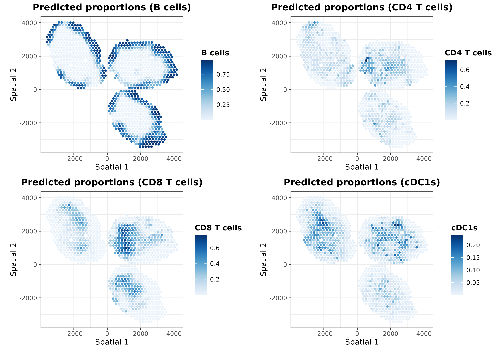
ggarrange(plotlist = list.plots[5:8], align = "hv")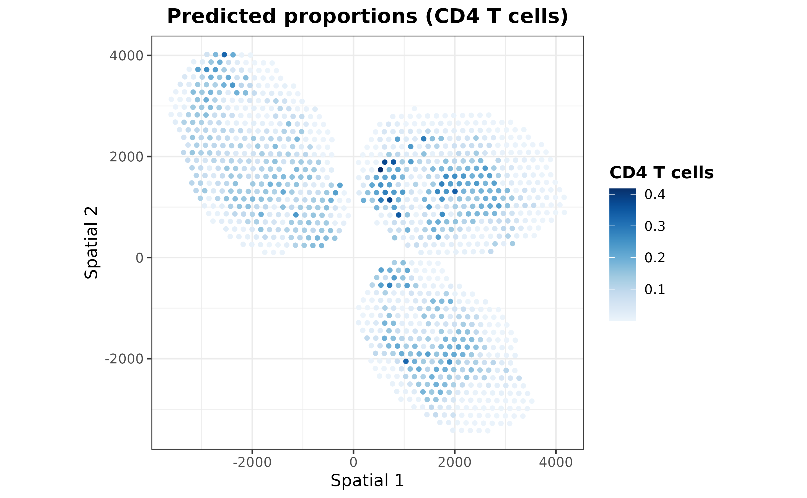
ggarrange(plotlist = list.plots[9:12], align = "hv")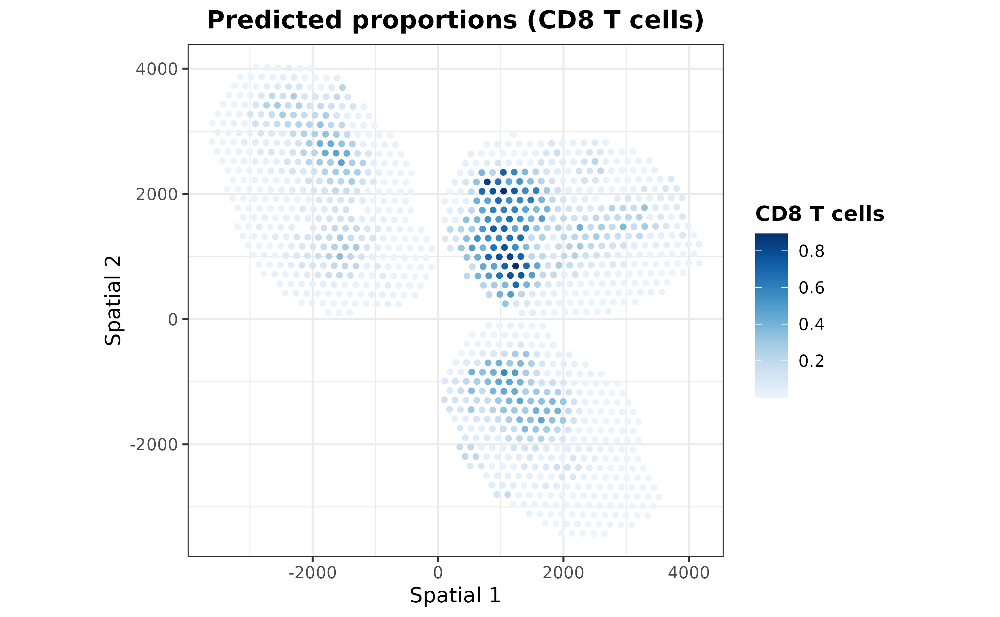
As one may expect, the extrinsic predictions are a smoothed version
of the final ones. It is also possible to visualize distances between
the extrinsic and intrinsic transcriptional profiles of each spot to
understand how the regularization step works by using the
plotDistances function:
plotDistances(mouseDLN.SDDLS, index.st = 1, size.point = 1.5) + coord_fixed()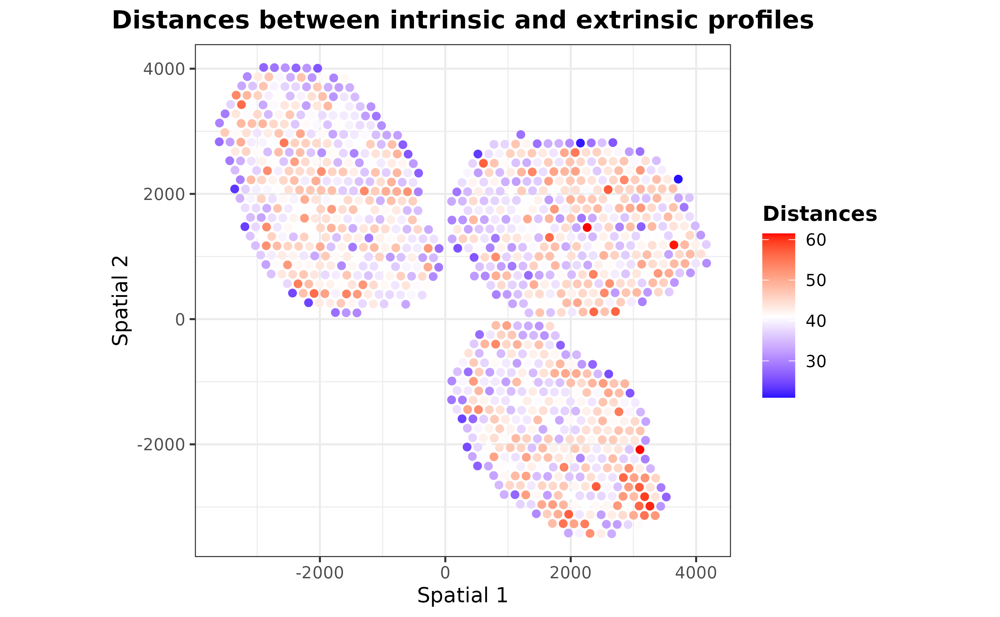
Those spots with distances less than the mean distance were regularized according to their nearest neighbor spots.
Interpreting the model
In order to make predictions more transparent,
SpatialDDLS includes an additional module designed to
provide insights into the model’s decision-making process. It relies on
calculating the predicted classes/loss function gradients with respect
to the input variables, a method popularly known as Vanilla Gradient.
These numeric values are computed for each gene and cell type using the
pure mixed transcriptional profiles previously simulated. Therefore,
they can be interpreted as the extent to which each feature is
contributing to the model’s predictions. While these values are
initially calculated at the sample/gene level, they are aggregated at
the cell type level in order to assess the relevance of each gene to
each cell type prediction. These steps are performed through the
interGradientDL function:
mouseDLN.SDDLS <- interGradientsDL(
mouseDLN.SDDLS, method = "class", scaling = "standardize"
)Importantly, depending on the method parameter, positive
and negative gradients must be differently interpreted:
- If gradients with respect to the input variables were calculated
using the loss function (
method = "loss"), genes with negative gradients (those that minimize the loss function) will be positively correlated with the presence of each cell type. - Conversely, if gradients with respect to the input variables were
calculated using classes (
method = "class"), genes with positive gradients (those that make the probability of being a cell type higher) will be positively associated with each cell type.
It is important to note that these markers should not be interpreted as cell type markers. Rather, they serve as indications to help interpret the model’s performance. In addition, due to the multivariate nature of our approach, gradients are surrogates at the feature level for predictions made considering all input variables collectively, and thus caution should be exercised in drawing direct conclusions about specific gene-cell type relationships.
For this example, let’s calculate gradients of the class function with respect to the input features and show the top 5 genes with the greatest gradients per cell type:
top.gradients <- topGradientsCellType(
mouseDLN.SDDLS, method = "class", top.n.genes = 5
)
sapply(
top.gradients, \(x) x$Positive
) %>% as.data.frame()## B cells CD4 T cells CD8 T cells cDC1s cDC2s GD T cells Macrophages
## 1 Rps2 Igfbp4 Cd8b1 Rap1gap S100a10 Actn2 1300017J02Rik
## 2 Vpreb3 Satb1 Acp5 Cd52 Mbnl1 Rgcc Cd8b1
## 3 Chchd10 Ly6c1 Saraf Nrn1 Samhd1 Rps2 Acp5
## 4 Jund Lef1 Art2b Ryr2 Rpl4 Nmrk1 Mif
## 5 Rpl22l1 Trib2 Themis Fn1 Pygl Rpl22l1 Prg3
## Migratory DCs Monocytes NK cells pDCs Tregs
## 1 Map4k4 Atp2b1 Bicd1 Itgb3 Tnfrsf18
## 2 Nmrk1 Samhd1 Depdc1a Csf1 Foxp3
## 3 Nfat5 Pou2f2 Ugcg H2-D1 Itgb1
## 4 Tnfrsf18 Tnfrsf18 Nmrk1 Fnip2 Mbnl1
## 5 Fnip2 Map4k4 Map4k4 Nfat5 S100a10As can be seen, among the top 5 genes some canonical markers for different cell types appear, such as Cd8 for CD8 T cells or Foxp3 for Tregs. These are just the top 5 genes, so considering a higher number of genes can provide a more comprehensive understanding of the genes being used by the model.
We also provide the plotHeatmapGradsAgg function for
visualizing the top N mean gradients per cell type. This plot highlights
genes with high gradients across different cell types, reflecting the
multivariate nature of neural networks.
hh <- plotHeatmapGradsAgg(mouseDLN.SDDLS, top.n.genes = 4, method = "class")
hh$Absolute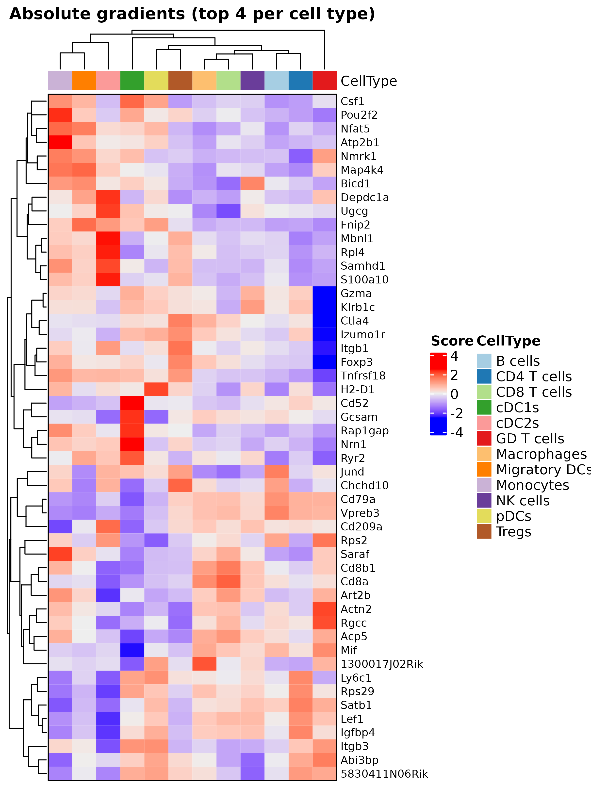
Finally, we can use the plotSpatialGeneExpr function to
visualize the spatial distribution of the top N genes per cell type in
the ST dataset. Let’s plot some genes for some cell types just for
demonstration purposes:
top.genes <- topGradientsCellType(mouseDLN.SDDLS, top.n.genes = 4)
for (i in c("B cells", "CD4 T cells", "CD8 T cells", "Tregs", "Monocytes")) {
list.plots <- list()
for (j in top.genes[[i]][["Positive"]]) {
list.plots[[j]] <- plotSpatialGeneExpr(
mouseDLN.SDDLS, index.st = 1, gene = j, size.point = 0.5,
title = paste0(i, " - ", j)
) + coord_fixed() + theme(legend.position = "none") ## legend removed just for viz
}
print(ggpubr::ggarrange(plotlist = list.plots, align = "hv"))
}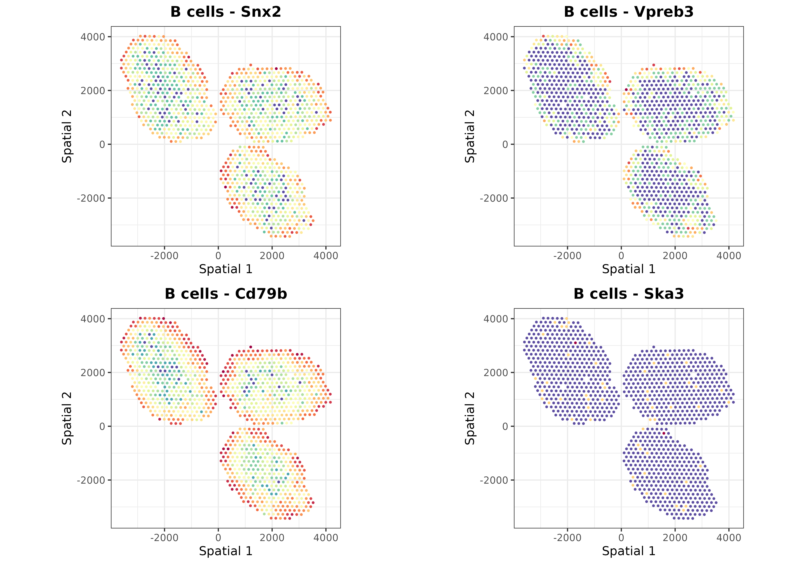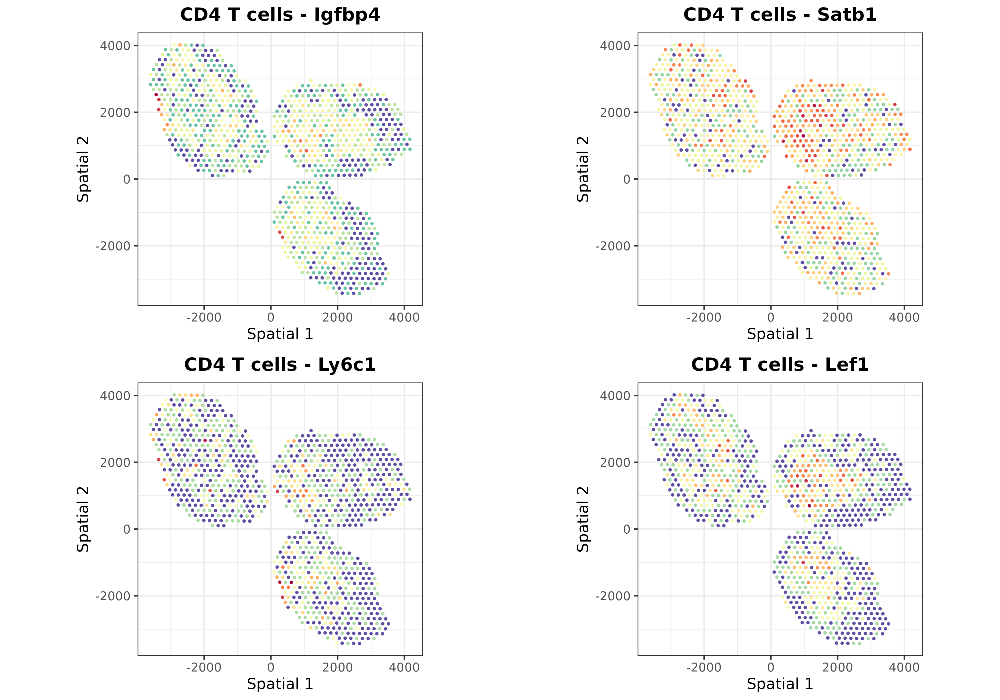 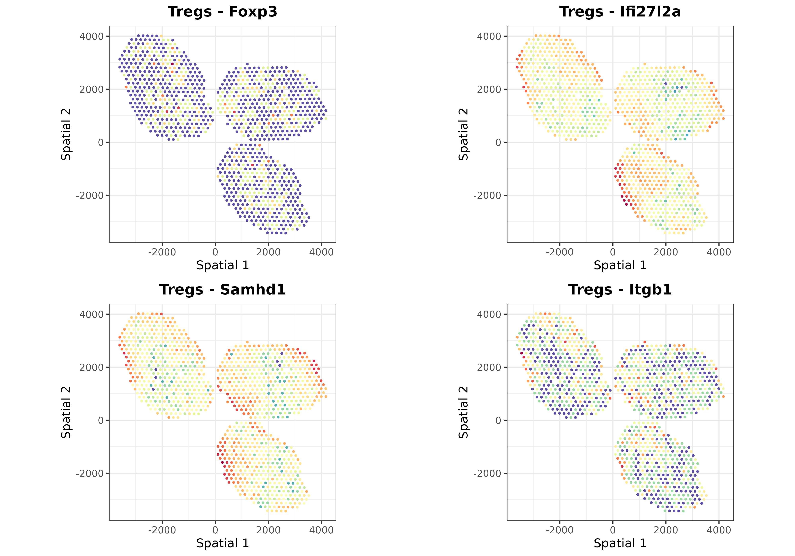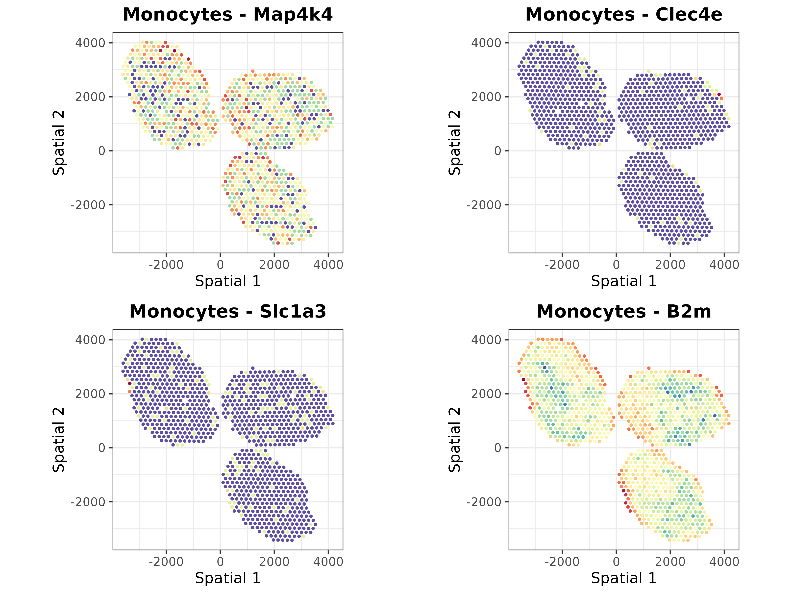
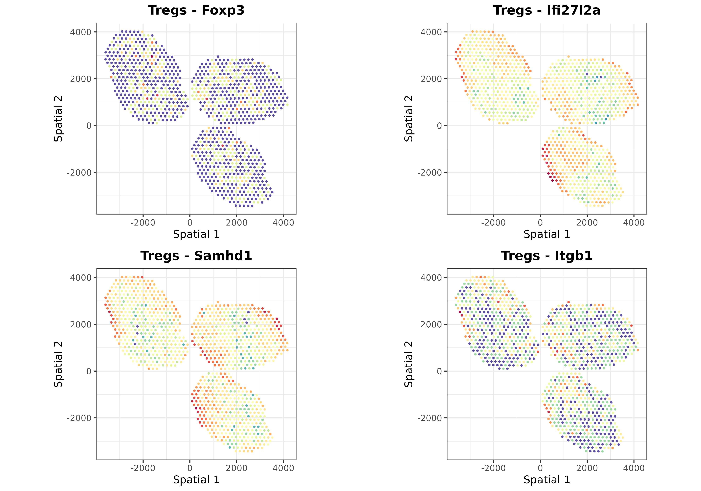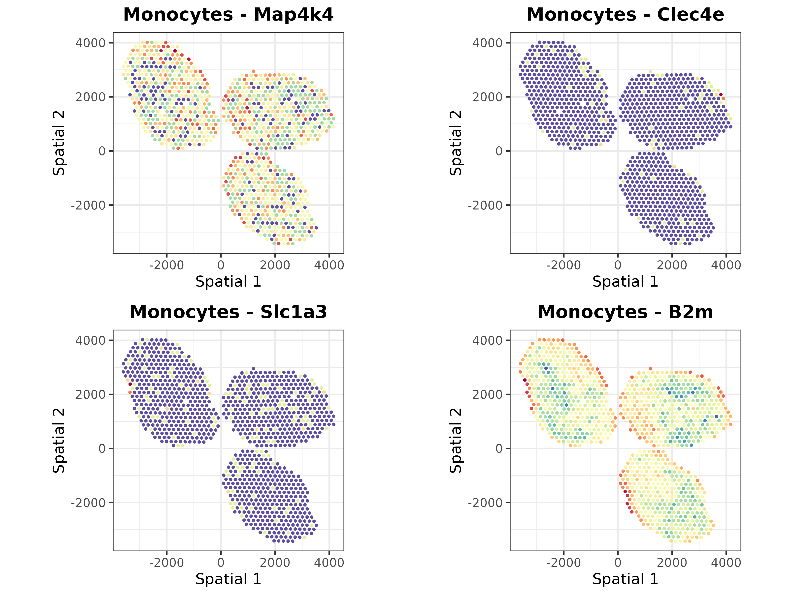
Clustering analysis
The SpatialDDLS R package also includes some functions
to cluster the ST dataset according to the predicted cell composition of
each spot. This functionality enables to dissect the ST datasets into
distinct cellular niches, information that might be relevant for further
analyses.
mouseDLN.SDDLS <- spatialPropClustering(mouseDLN.SDDLS, k.nn = 20)## No 'index.st' provided. Deconvoluting all SpatialExperiment objects contained in the `spatial.experiments` slot## === Selected graph-based clustering## === Running clustering for slide 1
plotSpatialClustering(mouseDLN.SDDLS) + coord_fixed()## No 'index.st' provided. Using first ST dataset## === Plotting first clustering configuration Clustering.graph.k.20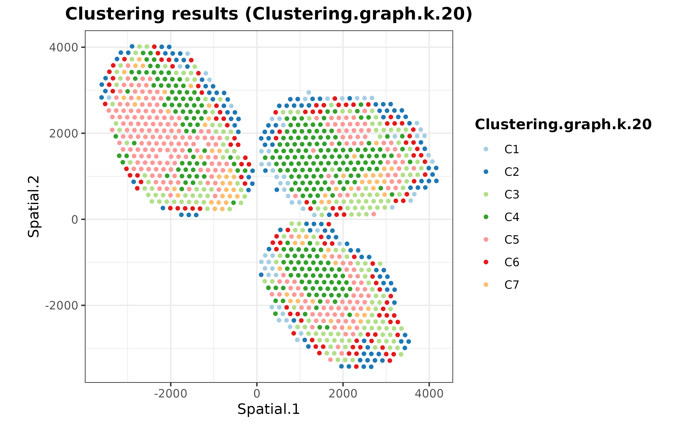
Comparing deconvoluted cell proportions with colocalization of cell markers
Finally, we are going to assess whether there is a collocation between the predicted cell type proportions and the expression of known markers for each cell type. This analysis aims to validate the model’s predictions by comparing them with well-established cellular markers, but it does not mean to be a quantitative validation of the model.
customMarkers <- list(
"B cells" = c("Cd74", "Cd19", "Cd79a", "Cd79b", "Ly6d"),
"CD4 T cells" = c("Cd4", "Lef1", "Fyb"),
"CD8 T cells" = c("Cd8b1", "Cd8a", "Trac"),
cDC1s = c("Xcr1", "Irf8"),
cDC2s = c("Irf4", "Cd4"),
"GD T cells" = c("Il7r", "Id2"),
Macrophages = c("Lyz2", "Lyz1", "Cd86", "Ly6c1"),
"Migratory DCs" = c("Ccl5", "Anxa3", "Fscn1"),
Monocytes = c("Fcer1g", "Cst3", "Lst1", "Itgam", "Kit", "Fcgr3"),
"NK cells" = c("Nkg7", "Il2rb", "Gzma"),
pDCs = c("Siglech", "Plac8", "Ly6c2", "Vtsb", "Zeb2", "Siglech"),
Tregs = c("Ikzf2", "Il2ra", "Foxp3")
) %>% lapply(FUN = function(x) x[x %in% rownames(MouseDLN.ST)])
## calculate z-scores
exprST <- MouseDLN.ST@assays@data[[1]]
logCPM <- edgeR::cpm(exprST, log = TRUE)
meanZscoresCustom <- purrr::map(
.x = names(customMarkers),
.f = ~{ colMeans(t(scale(t(logCPM[customMarkers[[.x]], , drop = FALSE])))) }
) %>% do.call(cbind, .)
colnames(meanZscoresCustom) <- names(customMarkers)
color.z.scores <- rev(
colorRampPalette(RColorBrewer::brewer.pal(n = 10, name = "RdBu"))(20)
)
st.coor <- SpatialExperiment::spatialCoords(
spatial.experiments(object = mouseDLN.SDDLS, index.st = 1)
)
colnames(st.coor) <- paste("Spatial", 1:2)
dfPlotLong <- reshape2::melt(
as.data.frame(cbind(st.coor, meanZscoresCustom)),
id.vars = c("Spatial 1", "Spatial 2"),
variable.name = "CellType", value.name = "Zscore"
)
dfPlotLong %>% ggplot(
aes(x = .data[["Spatial 1"]], y = .data[["Spatial 2"]], color = Zscore)
) + geom_point(size = 0.5) + theme_classic() +
ggtitle("Mean z-score of cell type markers") +
scale_color_gradientn(colors = color.z.scores, limit = c(-2, 2)) +
theme(
plot.title = element_text(face = "bold", hjust = 0.5),
axis.title.x = element_blank(), axis.text.x = element_blank(),
axis.ticks.x = element_blank(), axis.title.y = element_blank(),
axis.text.y = element_blank(), axis.ticks.y = element_blank()
) + coord_fixed() + facet_wrap(~ CellType) 
As it can be seen, markers for each cell type colocalize with the
cell proportions predicted by SpatialDDLS, demonstrating
its ability to deconvolute ST samples. For more examples and a
quantitative assessment of the algorithm, please see the published
manuscript Mañanes et al. (2024).